ICMP控制报文协议
Table of Contents
ICMP协议
ICMP经常被认为是IP层的一个组成部分。它传递差错报文以及其他需要注意的信息。ICMP报文通常被IP层或更高层协议（TCP或UDP）使用。一些ICMP报文把差错报文返回给用户进程。ICMP报文是在IP数据报内部被传输的，如图6-1所示：
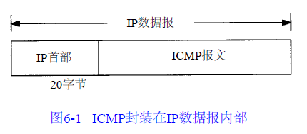
报文
ICMP报文的格式如图6-2所示：
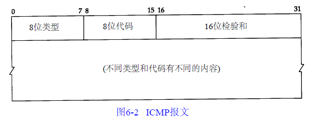
所有报文的前4个字节都是一样的：
- 类型字段可以有15个不同的值，以描述特定类型的ICMP报文。某些ICMP报文还使用代码字段的值来进一步描述不同的条件
- 检验和字段覆盖整个ICMP报文。使用的算法与在3.2节中介绍的IP首部检验和算法相同。ICMP的检验和是必需的
剩下的其他字节则互不相同
报文类型
各种类型的ICMP报文如下表所示，不同类型由报文中的类型字段和代码字段来共同决定：
| 类型 | 代码 | 描述 | 查询 | 差错 |
|---|---|---|---|---|
| 0 | 0 | 回显应答 | • | |
| 3 | 目的不可达 | |||
| 0 | 网络不可达 | • | ||
| 1 | 主机不可达 | • | ||
| 2 | 协议不可达 | • | ||
| 3 | 端口不可达 | • | ||
| 4 | 需要进行分片但设置了不分片比特 | • | ||
| 5 | 源站选路失败 | • | ||
| 6 | 目的网络不认识 | • | ||
| 7 | 目的主机不认识 | • | ||
| 8 | 源主机被隔离(作废不用) | • | ||
| 9 | 目的网络被强制禁止 | • | ||
| 10 | 目的主机被强制禁止 | • | ||
| 11 | 由于服务类型TOS，网络不可达 | • | ||
| 12 | 由于服务类型TOS，主机不可达 | • | ||
| 13 | 由于过滤，通信被强制禁止 | • | ||
| 14 | 主机越权 | • | ||
| 15 | 优先权中止生效 | • | ||
| 4 | 0 | 源端被关闭(基本流控制) | • | |
| 5 | 重定向 | |||
| 0 | 对网络重定向 | • | ||
| 1 | 对主机重定向 | • | ||
| 2 | 对服务类型和网络重定向 | • | ||
| 3 | 对服务类型和主机重定向 | • | ||
| 8 | 0 | 请求回显 | • | |
| 9 | 0 | 路由器通告 | • | |
| 10 | 0 | 路由器请求 | • | |
| 11 | 超时 | |||
| 0 | 传输期间生存时间为0 | • | ||
| 1 | 在数据报组装期间生存时间为0 | • | ||
| 12 | 参数问题 | |||
| 0 | 坏的IP首部(包括各种差错) | • | ||
| 1 | 缺少必需的选项 | • | ||
| 13 | 0 | 时间戳请求 | • | |
| 14 | 0 | 时间戳应答 | • | |
| 15 | 0 | 信息请求(作废不用) | • | |
| 16 | 0 | 信息应答(作废不用) | • | |
| 17 | 0 | 地址掩码请求 | • | |
| 18 | 0 | 地址掩码应答 | • |
表中的最后两列表明ICMP报文是一份查询报文还是一份差错报文。因为对ICMP差错报文有时需要作特殊处理，所以需要对它们进行区分。例如，在对ICMP差错报文进行响应时，永远不会生成另一份ICMP差错报文（如果没有这个限制规则，可能会遇到一个差错产生另一个差错的情况，而差错再产生差错，这样会无休止地循环下去）
当发送一份ICMP差错报文时，报文始终包含IP的首部和产生ICMP差错报文的IP数据报的前8个字节。这样，接收ICMP差错报文的模块就会把它与某个特定的协议（根据IP数据报首部中的协议字段来判断）和用户进程（根据包含在IP数据报前8个字节中的TCP或UDP报文首部中的TCP或UDP端口号来判断）联系起来
下面各种情况都不会导致产生ICMP差错报文：
- ICMP差错报文（但是ICMP查询报文可能会产生ICMP差错报文）
- 目的地址是广播地址或多播地址的IP数据报
- 作为链路层广播的数据报
- 不是IP分片的第一片
- 源地址不是单个主机的数据报，例如源地址不能为零地址、环回地址、广播地址或多播地址
这些规则是为了防止过去允许ICMP差错报文对广播分组响应所带来的广播风暴
地址掩码请求与应答
ICMP地址掩码请求用于无盘系统在引导过程中获取自己的子网掩码。系统广播它的ICMP请求报文（这一过程与无盘系统在引导过程中用RARP获取IP地址是类似的，无盘系统获取子网掩码的另一个方法是BOOTP协议）。ICMP地址掩码请求和应答报文的格式如图6-4所示：
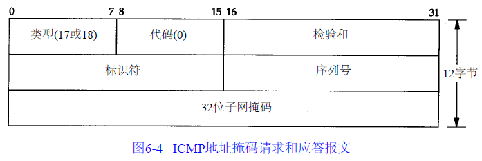
ICMP报文中的标识符和序列号字段由发送端任意选择设定，这些值在应答中将被返回。这样，发送端就可以把应答与请求进行匹配
广播地址掩码请求
可以写一个简单的程序（命名为icmpaddrmask），它发送一份ICMP地址掩码请求报文，然后打印出所有的应答。由于一般是把请求报文发往广播地址，这里也这样做，其中目的地址（140.252.13.63）是子网140.252.13.32的广播地址：
sun $ icmpaddrmask 140.252.13.63
received mask = ffffffe0, from 140.252.13.3 来自 本机 received mask = ffffffe0, from 140.252.13.5 来自 bsdi received mask = ffff0000, from 140.252.13.4 来自 svr4
首先在输出中注意到的是，从svr4返回的子网掩码是错的。显然，尽管svr4接口已经设置了正确的子网掩码，但是svr4还是返回了一个普通的B类地址掩码，就好像子网并不存在一样：
svr4 $ ifconfig emd0
emd0: flags=23<UP,BROADCAST,NOTRAILERS>
inet 140.252.13.34 netmask ffffffe0 broadcast 140.252.13.63
由此可见svr4处理ICMP地址掩码请求过程存在差错。用tcpdump命令来查看主机bsdi上的情况，输出如图6-5所示：
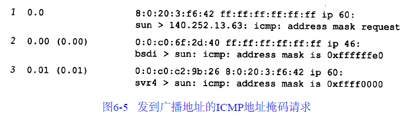
- 尽管在线路上什么也看不见，但是发送主机sun也能接收到ICMP应答（“来自本机”的输出行）。这是广播的一般特性：发送主机也能通过某种内部环回机制收到一份广播报文拷贝。由于术语“广播”的定义是指局域网上的所有主机，因此它必须包括发送主机在内（当以太网驱动程序识别出目的地址是广播地址后，它就把分组送到网络上，同时传一份拷贝到环回接口）
- bsdi广播应答，而svr4却只把应答传给请求主机。通常，应答地址必须是单播地址，除非请求端的源IP地址是0.0.0.0。本例不属于这种情况，因此，把应答发送到广播地址是BSD的一个内部差错
向本机发送地址掩码请求
向本机IP地址和环回地址分别发送地址掩码请求：
sun $ icmpaddrmask sun
received mask= ff000000, from 140.252.13.33
sun $ icmpaddrmask localhost
received mask= ff000000, from 127.0.0.1
上述两种情况下返回的地址掩码对应的都是环回地址，即A类地址127.0.0.1。ICMP地址掩码应答必须是收到请求接口的子网掩码（这是因为多接口主机每个接口有不同的子网掩码），因此两种情况下地址掩码请求都来自于环回接口。所以说发送给本机IP地址的数据报（140.252.12.33）实际上是送到环回接口
时间戳请求与应答
ICMP时间戳请求允许系统向另一个系统查询当前的时间。返回的建议值是自午夜开始计算的毫秒数，协调的统一时间(UTC, 格林尼治时间)。这种ICMP报文的好处是它提供了毫秒级的分辨率，而利用其他方法从别的主机获取的时间（如某些Unix系统提供的rdate命令）只能提供秒级的分辨率。由于返回的时间是从午夜开始计算的，因此调用者必须通过其他方法获知当时的日期，这是它的一个缺陷
ICMP时间戳请求和应答报文格式如图6-6所示：
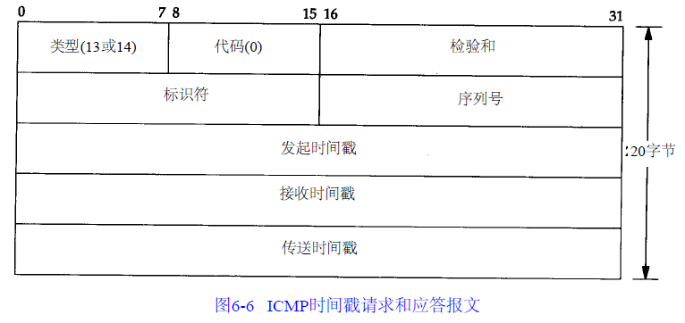
请求端填写发起时间戳，然后发送报文。应答系统收到请求报文时填写接收时间戳，在发送应答时填写发送时间戳。但是，实际上，大多数的实现把后面两个字段都设成相同的值（提供三个字段的原因是可以让发送方分别计算发送请求的时间和发送应答的时间）
示例
可以写一个简单程序icmptime，程序打印出ICMP报文中的三个时间戳，以及计算出：
- orig：发起时间戳
- recv：接收时间戳
- xmit：发送时间戳
- rtt：往返时间，收到应答时的时间值减去发送请求时的时间值
- difference：接收时间戳值减去发起时间戳值
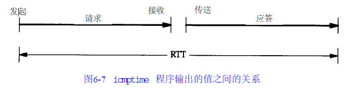
假定我们相信RTT的值，并且相信RTT的一半用于请求报文的传输，另一半用于应答报文的传输，那么为了使本机时钟与查询主机的时钟一致，本机时钟需要进行调整，调整值是：
difference - rtt/2
- bsdi
从sun主机给bsdi主机发送ICMP时间戳请求，并打印出返回的应答。运行结果如下：
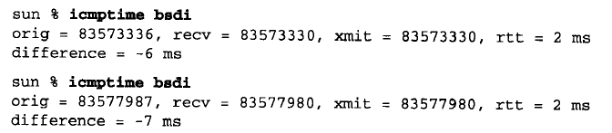
- bsdi主机把接收时间戳和发送时间戳都设成相同的值
- bsdi的时钟比sun的时钟要慢7ms~8ms
- 由于时间戳的值是自午夜开始计算的毫秒数，即UTC，因此它们的值始终小于86400000(24×60×60×1000)。这些例子都是在下午4:00以前运行的，并且在一个比UTC慢7个小时的时区，因此它们的值比82800000(16+7=23小时)要大没问题
- 如果对主机bsdi重复运行该程序数次，会发现接收时间戳和发送时间戳的最后一位数总是0。这是因为该版本的软件只能提供10ms的时间分辨率
- svr4
向主机svr4运行该程序两次：
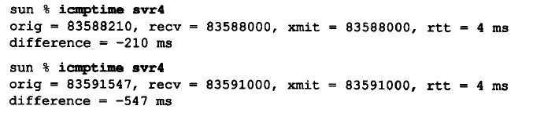
由于某种原因， SVR4在ICMP时间戳中不提供毫秒级的分辨率。这样，对秒以下的时间差调整将不起任何作用
- 其他主机
对子网140.252.1上的其他主机运行该程序：
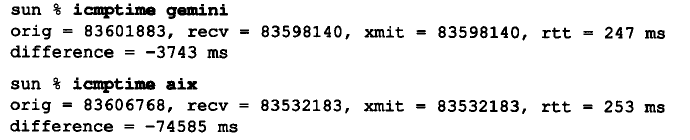
结果表明其中一台主机的时钟与sun相差3.7秒，而另一个主机时钟相差近75秒
- cisco路由器
对路由器gateway（Cisco路由器）。它表明，当系统返回一个非标准时间戳值时（不是自午夜开始计算的毫秒数，UTC），它就用32bit时间戳中的高位来表示。我们的程序证明了一点，在尖括号中打印出了接收和发送的时间戳值（在关闭高位之后）。另外，不能计算发起时间戳和接收时间戳之间的时间差，因为它们的单位不一致：
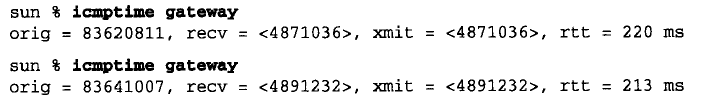
如果我们在这台主机上运行该程序数次，会发现时间戳值显然具有毫秒级的分辨率，而且是从某个起始点开始计算的毫秒数，但是起始点并不是午夜UTC（例如可能是从路由器引导时开始计数的毫秒数）
- ntp服务器
比较sun主机和另一个已知是准确的系统时钟，一个ntp时间服务器：
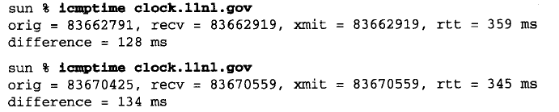
如果把difference的值减去RTT的一半，结果表明sun主机上的时钟要快38.5～51.5ms
其他方法
还可以用其他方法来获得时间和日期：
- 日期服务程序和时间服务程序。前者是以人们可读的格式返回当前的时间和日期，后者是一行ASCII字符。可以用telnet命令来验证这个服务：
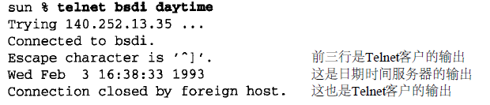
时间服务程序返回的是一个32bit的二制进数值，表示自UTC，1900年1月1日午夜起算的秒数。这个程序是以秒为单位提供的日期和时间
- NTP：严格的计时器使用网络时间协议，该协议在RFC 1305中给出了描述。这个协议采用先进的技术来保证LAN或WAN上的一组系统的时钟误差在毫秒级以内
- 开放软件基金会的分布式计算环境(DCE)定义了分布式时间服务(DTS)，它也提供计算机之间的时钟同步
- 伯克利大学的Unix系统提供守护程序timed(8)，来同步局域网上的系统时钟。不像NTP和DTS，timed不在广域网范围内工作
端口不可达
端口不可达报文，它是ICMP目的不可到达报文中的一种，来看一看ICMP差错报文中所附加的信息
TFTP实例
UDP的规则之一：如果收到一份UDP数据报而目的端口与某个正在使用的进程不相符，那么UDP返回一个ICMP不可达报文
对于TFTP服务器来说，UDP的公共端口号是69。但是大多数的TFTP客户程序允许用connect命令来指定一个不同的端口号。这里，就用它来指定8888端口：
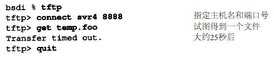
connect命令首先指定要连接的主机名及其端口号，接着用get命令来取文件。敲入get命令后，一份UDP数据报就发送到主机svr4上的8888端口。tcpdump命令引起的报文交换结果如图6-8所示：
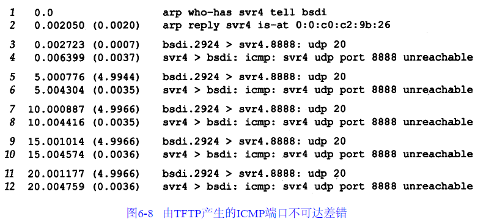
在UDP数据报送到svr4之前：
- 先发送一份ARP请求来确定它的硬件地址（第1行）
- 接着返回ARP应答（第2行）
- 然后才发送UDP数据报（第3行）
- 一个ICMP端口不可达差错是立刻返回的（第4行）
- 但是TFTP客户程序看上去似乎忽略了这个ICMP报文，而在5秒钟之后又发送了另一份UDP数据报（第5行）。在客户程序放弃之前重发了三次。
有些值得注意的细节：
- ICMP报文是在主机之间交换的，而不用目的端口号，而每个20字节的UDP数据报则是从一个特定端口（2924）发送到另一个特定端口（8888）
- 跟在每个UDP后面的数字20指的是UDP数据报中的数据长度：
- TFTP的2个字节的操作代码
- 9个字节以空字符结束：文件名temp.foo
- 9个字节以空字符结束：字符串netascii
端口不可达报文
如果用-e选项运行同样的例子，可以看到每个返回的ICMP端口不可达报文的完整长度。这里的长度为70字节，各字段分配如图6-9所示：
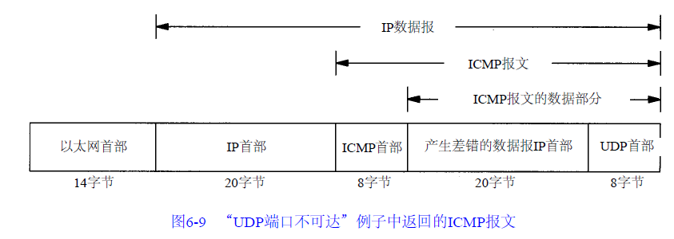
ICMP的一个规则是ICMP差错报文必须包括生成该差错报文的数据报IP首部（包含任何选项），还必须至少包括跟在该IP首部后面的前8个字节。在我们的例子中，跟在IP首部后面的前8个字节包含UDP的首部：
- 包含在UDP首部中的内容是源端口号和目的端口号。就是由于目的端口号8888才导致产生了ICMP端口不可达的差错报文。接收ICMP的系统可以根据源端口号2924来把差错报文与某个特定的用户进程相关联（在本例中是TFTP客户程序）
- 导致差错的数据报中的IP首部要被送回的原因是因为IP首部中包含了协议字段，使得ICMP可以知道如何解释后面的8个字节（在本例中是UDP首部）。如果我们来查看TCP首部,可以发现源端口和目的端口被包含在TCP首部的前8个字节中
ICMP不可达报文的一般格式如图6-10所示：
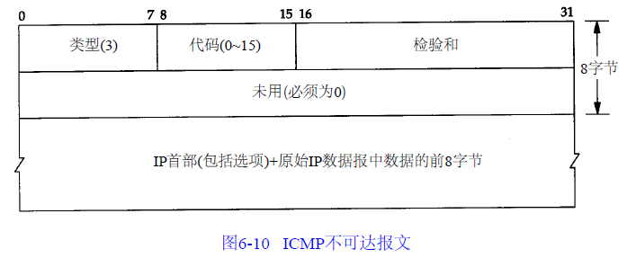
- 有16种不同类型的ICMP不可达报文，代码分别从0到15。ICMP端口不可达差错代码是3
- 尽管图上标明了在ICMP报文中的第二个32bit字必须为0，但是当代码为4时（“需要分片但设置了不分片比特”），路径MTU发现机制（2.9节）却允许路由器把外出接口的MTU填在这个32bit字的低16bit中
- 尽管ICMP规则允许系统返回多于8个字节的产生差错的IP数据报中的数据，但是大多数从伯克利派生出来的系统只返回8个字节
tcpdump时间序列
以时间系列的格式给出tcpdump命令的输出，如图6-11所示：
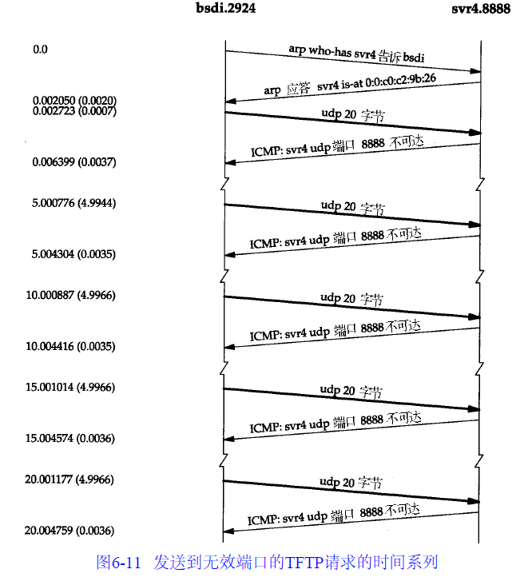
- 时间随着向下而递增，在图左边的时间标记与tcpdump命令的输出是相同的
- 位于图顶部的标记是通信双方的主机名和端口号
- 当UDP或TCP数据正在被传送时，用粗线的行来表示
- BSD系统不把接收到的ICMP报文中的UDP数据通知用户进程，因此它会继续重发5次请求
- TFTP客户程序使用的是不太好的超时重传算法：只是假定5秒是足够的，因此每隔5秒就重传一次
- ICMP报文是在发送UDP数据报3.5ms后返回的，这和以后看到的Ping应答的往返时间差不多
ICMP报文的4.4BSD处理
由于ICMP覆盖的范围很广，从致命差错到信息差错，因此即使在一个给定的系统实现中，对每个ICMP报文的处理都是不相同的。图6-12显示的是4.4BSD系统对每个可能的ICMP报文的处理方法：
| 类型 | 代码 | 描述 | 处理方式 |
|---|---|---|---|
| 0 | 0 | 回显应答 | 用户进程 |
| 3 | 目的不可达 | ||
| 0 | 网络不可达 | “无路由到达主机” | |
| 1 | 主机不可达 | “无路由到达主机” | |
| 2 | 协议不可达 | “连接被拒绝” | |
| 3 | 端口不可达 | “连接被拒绝” | |
| 4 | 需要进行分片但设置了不分片比特 | “报文太长” | |
| 5 | 源站选路失败 | “无路由到达主机” | |
| 6 | 目的网络不认识 | “无路由到达主机” | |
| 7 | 目的主机不认识 | “无路由到达主机” | |
| 8 | 源主机被隔离(作废不用) | “无路由到达主机” | |
| 9 | 目的网络被强制禁止 | “无路由到达主机” | |
| 10 | 目的主机被强制禁止 | “无路由到达主机” | |
| 11 | 由于服务类型TOS，网络不可达 | “无路由到达主机” | |
| 12 | 由于服务类型TOS，主机不可达 | “无路由到达主机” | |
| 13 | 由于过滤，通信被强制禁止 | （忽略） | |
| 14 | 主机越权 | （忽略） | |
| 15 | 优先权中止生效 | （忽略） | |
| 0 | 源端被关闭(基本流控制) | TCP由内核处理, UDP则忽略 | |
| 5 | 重定向 | ||
| 0 | 对网络重定向 | 内核更新路由表 | |
| 1 | 对主机重定向 | 内核更新路由表 | |
| 2 | 对服务类型和网络重定向 | 内核更新路由表 | |
| 3 | 对服务类型和主机重定向 | 内核更新路由表 | |
| 8 | 0 | 请求回显 | |
| 9 | 0 | 路由器通告 | 用户进程 |
| 10 | 0 | 路由器请求 | 用户进程 |
| 11 | 超时 | ||
| 0 | 传输期间生存时间为0 | 用户进程 | |
| 1 | 在数据报组装期间生存时间为0 | 用户进程 | |
| 12 | 参数问题 | ||
| 0 | 坏的IP首部(包括各种差错) | “协议不可用” | |
| 1 | 缺少必需的选项 | “协议不可用” | |
| 13 | 0 | 时间戳请求 | 内核产生应答 |
| 14 | 0 | 时间戳应答 | 用户进程 |
| 15 | 0 | 信息请求(作废不用) | |
| 16 | 0 | 信息应答(作废不用) | |
| 17 | 0 | 地址掩码请求 | 内核产生应答 |
| 18 | 0 | 地址掩码应答 | 用户进程 |
- 内核：那么ICMP就由内核来处理
- 用户进程：那么报文就被传送到所有在内核中登记的用户进程，以读取收到的ICMP报文。如果不存在任何这样的用户进程，那么报文就悄悄地被丢弃
- 有一些报文完全被忽略
- 引号内的一串字符：那么它就是对应的Unix差错